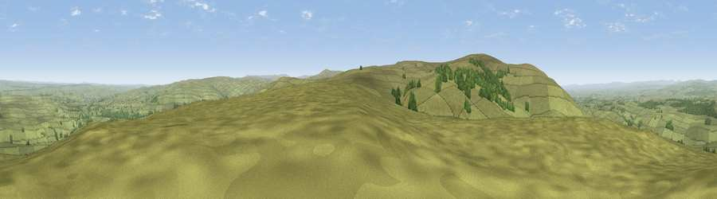

Viewpoint near Halton Lea Gate
#4169 in England · top 9% of its area beats it · near Halton Lea GateWhere it is
The exact computed spot (NY 63675 57275). Click the marker for map links.
The view, rendered

A 360° render of this exact spot computed from the terrain model, tree cover and land cover — summer colours, afternoon light, calibrated against photographs of famous viewpoints. Real trees, hedges and buildings will differ in detail.
The panorama
Grey silhouette: terrain skyline in each direction (720 bearings, Earth curvature and refraction included). Dashed green: skyline with trees (+15 m) and buildings (+8 m) as obstacles. Blue strip: how far the ground is visible on each bearing.
Where the view opens
Wedge length = distance to the farthest visible ground on that bearing (vegetation-aware). Rings at 10, 25 and 50 km.
What fills the view
91% grassland · 8% woodland
Angular shares of the visible panorama (visual magnitude), not map area. Landscape diversity 0.14 (0–1 Shannon).
Key numbers
More beautiful places nearby
The staircase of upgrades: each row has a higher view potential than everything closer. Driving times are estimates from straight-line distance, calibrated against real road routing — check an actual route before setting out.
| Place | Direction | Drive | Score |
|---|---|---|---|
| Viewpoint near Hallbankgate | W · 3 km | ~7 min | 73.4 |
| Cold Fell | WSW · 4 km | ~8 min | 74.0 |
| Viewpoint near Castle Carrock | WSW · 6 km | ~12 min | 76.9 |
| Viewpoint near Cumrew | SW · 9 km | ~18 min | 78.8 |
| Barrock Fell | WSW · 20 km | ~33 min | 81.1 |
| Viewpoint near Watermillock | SSW · 40 km | ~60 min | 82.6 |
| Viewpoint near Watermillock | SSW · 41 km | ~60 min | 83.5 |
| Skiddaw South Top | SW · 47 km | ~68 min | 85.8 |
54.90886, -2.56809 · source: screening · position refined by local search. Computed location — check access rights before visiting.